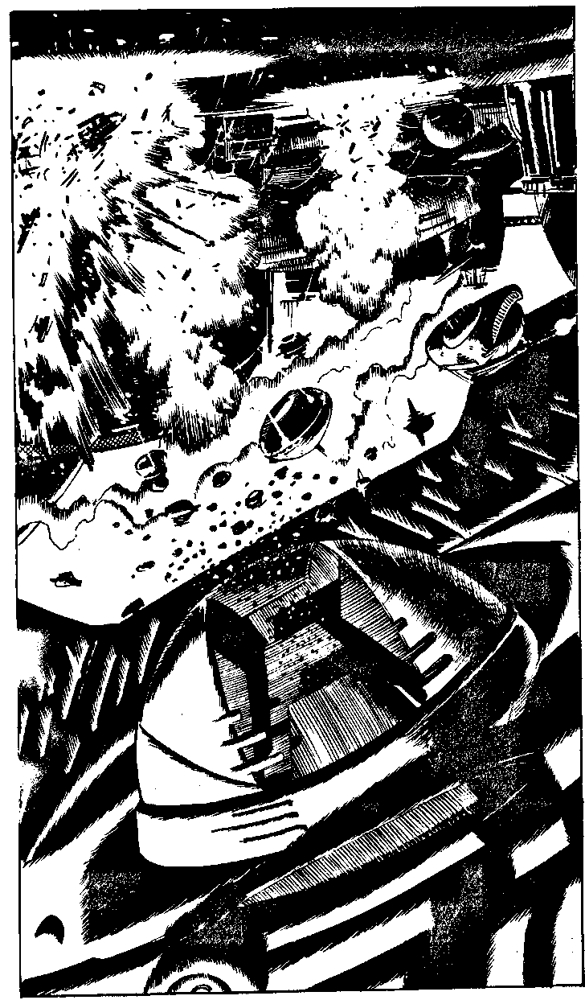

218
As you steal towards the hangar you hear the sound of an alarm. You look to the source and see an infra-red scanner. Twenty gleaming barrels, the space-artillery, composed of a grill-like mesh of metal alloys, dip down ponderously towards you. You begin to sprint as bands of energy pulse ever more quickly from end to end of the barrels, which then spit out balls of plasma. Twenty plasma shells erupt around you, the explosion digs a crater a hundred metres deep, completely destroying the remnants of Yelov's Time Machine as well as you. You are just a memory.
Turn to 1